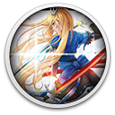
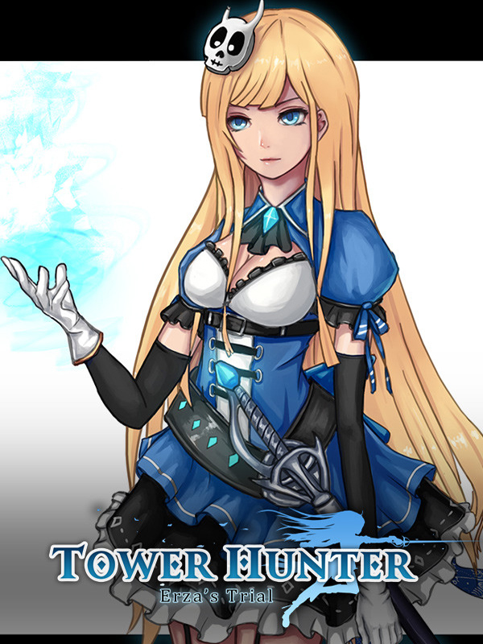

 Tower Hunter: Erza's Trial
Detalhes
|  | |
| Tempo de jogo | Não Jogado |
| Última Atividade | Nunca |
| Adicionado | 11/02/2025 13:17:39 |
| Modificado | 11/02/2025 13:29:13 |
| Status de Conclusão | Not Played |
| Biblioteca | Gog |
| Fonte | GOG |
| Plataforma | PC (Windows) |
| Data de Lançamento | 12/10/2019 |
| Pontuação da Comunidade | 50 |
| Avaliação da crítica | |
| Pontuação do Usuário | |
| Gênero | Adventure Indie Platform Role-playing (RPG) |
| Desenvolvedor | IceSitruuna |
| Editor | IceSitruuna |
| Funções | Single Player |
| Links | Steam GOG Official iPhone iPad Twitch |
| Tag | |
Descrição
Introduction:

With features of roguelite, players of Tower Hunter: Erza’s Trial fight their way up in the world of a giant tower with random modules. Different terrains are found in the towers, and there is exploration to do and challenges to overcome. Due to a contract between our heroine Erza and a demon, Erza is beamed back to the original start every time she dies. As time loops, Erza, becomes a strong fighter who can make her way to her target.
Features:
- 2.5d toon render side-scroller game that exhibits fluent motion display.
- smooth control: a dodge may cancel punish, and strength and direction can be fine-tuned for jumps.
- Soul-like actions: supplies are limited; footsie and dodge are key factors and every move and weapon has its own magic.
- Each weapon has its ownfeatures a combo with which: you can combine light and heavy blows and switch from attack andto dodge.
- The classic order system from Castlevania is incorporated: special weapon skills and magic are triggered by simple commands.
- Take advantage of the special rune core system: in every adventure, the player can choose to foster a certain passive skill.
- licence system: acquire licences based on your clearance speed and the achievement of different conditions. These licences can be used for other purposes beyond display.
- Explore hidden elements: hidden passages that can be destroyed and sealed doors that must be opened using a corresponding colour key and that are full of dangers.

Gameplay:
In the world of Tower Hunter, countless warriors have already gone before you to challenge the unsolved secrets of the tower, but they failed.A mischievous god is lord of the tower. Cards appear after bosses are defeated.
The empire grants different levels of licences to the warriors exploring the tower, according to the rarity of the cards they have collected. These licences bring with them status and power. Nobles have gone to the tower to compete for status and glory, but none have been as fortunate as our heroine Erza.In her childhood, Erza became bonded with a demon, who grants her another chance at life each time she dies. Due to this special ability, Erza can explore frontiers that no one has ever seen.
One common feature of roguelike games is that there is no checkpoint where progress can be saved, and players must lose everything if their character dies. This basic design is followed here, but players can still accumulate a certain proportion of resources during the course of each adventure, and these can be used to acquire more skills and send characters to new stages, where they develop and become stronger. The more familiar the player becomes with gameplay, the more practised the response and battle skills are and the stronger and better equipped the heroine is, the further the player can go in the tower.
This game is the prologue to Tower Hunter, which tells the story of how Erza the Sword Maiden became Empire’s youngest Major. What is in store for her? Stay tuned!